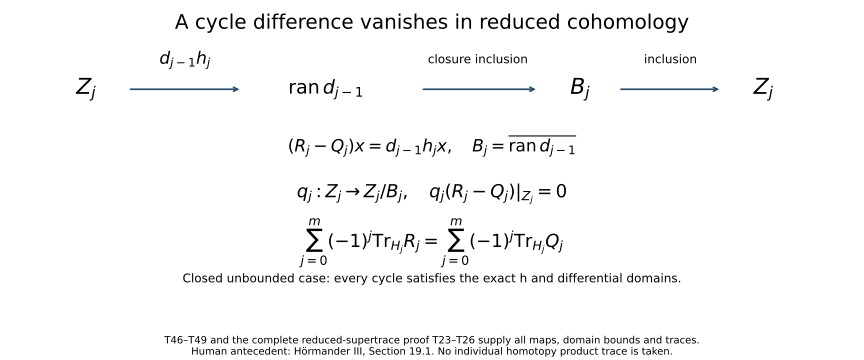

Traces that survive passage to cohomology
An index can be recovered from a difference of traces even when neither operator being compared has a meaningful trace. A complex introduces a second cancellation: contributions from the boundaries occur in adjacent degrees with opposite signs. This lesson proves both mechanisms, including the case of closed unbounded differentials with nonclosed ranges.
All Hilbert spaces are complex and may be nonseparable or zero-dimensional. Inner products are linear in the first variable. An operator without a domain qualification is bounded and everywhere defined. A sum of nonnegative numbers indexed by an arbitrary set means the supremum of its finite subsums. An absolutely summable complex family has a sum independent of ordering, defined by finite-subset limits. A finite nonnegative sum has at most countably many nonzero terms: for each positive integer \(m\), only finitely many terms can exceed \(1/m\).
1. Hilbert-space contracts and square-summable operators
The following Hilbert-space and operator facts are used with the stated domains and limits. The Banach and Fredholm tools appear in Banach estimates, quotient spaces and compact parameter arguments and Finite defects under perturbation.
Section 6 of Spectral measures with the original operator domain retained proves the Hilbert interfaces in full: (HF1)–(HF5) give projections, arbitrary orthonormal bases and bounded adjoints; (HF6)–(HF9) give the unique positive root with its actual moment domain; (HF10)–(HF17) prove \(D((S^*S)^{1/2})=D(S)\), the polar isometry and every finite-band inverse; and (HF18)–(HF19) construct the Hilbert tensor completion. These proofs allow nonclosed ranges and arbitrary Hilbert dimension. The finite-dimensional compactness facts retain the exact Banach-foundation route.
- Hilbert-space geometry. Arbitrary Hilbert spaces have orthonormal bases; Parseval's identity and orthogonal expansions hold as finite-subset limits; closed subspaces have orthogonal projections; bounded operators have bounded adjoints with \(\|A^*\|=\|A\|\), and \((\operatorname{ran}A)^\perp=\ker A^*\). Finite-dimensional Hilbert spaces have the usual compactness and dimension properties.
- Positive square roots. Every bounded positive selfadjoint operator has a unique bounded positive square root. The root squares to the original operator and has the expected quadratic-form identity. No compactness or countable spectral basis is assumed.
- Closed-operator polar decomposition. If \(S:H\supset D(S)\to K\) is closed and densely defined, \(S^*S\) is positive selfadjoint, \(|S|=(S^*S)^{1/2}\) has domain \(D(S)\), and \(S=U|S|\), where \(U\) is a partial isometry from \((\ker S)^\perp\) onto \(\overline{\operatorname{ran}S}\). For a positive selfadjoint \(B\), its spectral projections \(P_n=\mathbf1_{[1/n,n]}(B)\) satisfy \(P_nH\subset D(B)\), commute with \(B\) on \(D(B)\), obey \(n^{-1}\|x\|\leq\|Bx\|\leq n\|x\|\) on \(P_nH\), and converge strongly to the projection onto \((\ker B)^\perp\). On \(P_nH\), \(B\) is a bounded bijection with bounded inverse given by the spectral function \(1/\lambda\).
- Hilbert tensor products. The algebraic tensor product with inner product \(\langle x\otimes y,x'\otimes y'\rangle=\langle x,x'\rangle\langle y,y'\rangle\) has a Hilbert completion. Tensor products of orthonormal bases form an orthonormal basis of that completion. Basic scalar series and finite-product operations are understood. We verify the operator estimates and the Hilbert-Schmidt realization below.
- Measure facts (optional \(L^2\) realization only). \(L^2\) completeness, product integrals for elementary products under the primitive countable rectangle-cover product measure, and approximation of \(L^2\) functions by simple functions supported on sets of finite measure. The abstract tensor and index proofs use no measure realization.
- Banach-space tools. Banach completeness, the bounded inverse theorem, and the uniform boundedness theorem for arbitrary pointwise bounded families. These two results and their assumptions are given in Section 1 of Finite defects under perturbation.
- Compactness facts. Compactness of finite-dimensional balls, metric sequential compactness, and the fact that a uniform limit in operator norm of compact operators is compact. For the last fact, finite \(\varepsilon\)-nets for the approximants' unit-ball images give total boundedness of the limit image.
- Fredholm tools. Sections 2–5 of Finite defects under perturbation give the compactness characterization and norm stability of upper semi-Fredholm maps, Fredholm composition, and the two-parametrix criterion. This lesson uses the version in which no range complement is assumed in the upper semi-Fredholm case.
Let \((e_i)_{i\in I}\) be an orthonormal basis of \(H\). For \(A:H\to K\), set
\[ \|A\|_2^2=\sum_{i\in I}\|Ae_i\|^2. \tag{T1} \]The operator is Hilbert-Schmidt when this is finite; the class is denoted \(\mathcal S_2(H,K)\).
Theorem. Formula (T1) is independent of the basis. The adjoint has the same Hilbert-Schmidt norm. The class is complete in that norm, contains every finite-rank operator densely, and
\[ \|A\|\leq\|A\|_2,\qquad \|BAC\|_2\leq\|B\|\|A\|_2\|C\| \tag{T2} \]for bounded maps of the indicated source and target spaces. Every Hilbert-Schmidt map is compact.
Proof. Choose an orthonormal basis \((f_j)_{j\in J}\) of \(K\). Parseval, followed by the definition of a nonnegative double sum, gives
\[ \sum_i\|Ae_i\|^2 =\sum_{i,j}|\langle Ae_i,f_j\rangle|^2 =\sum_j\|A^*f_j\|^2. \tag{T3} \]Both orders of summation equal the supremum over finite subsets of \(I\times J\). For any finite subset of the product, its two coordinate projections are finite, so finite rectangles give the same supremum. Fixing either basis in (T3) proves independence of the other, and proves adjoint equality.
For a finite orthogonal expansion \(x=\sum_i c_ie_i\), Cauchy-Schwarz gives \(\|Ax\|\leq(\sum_i|c_i|^2)^{1/2}(\sum_i\|Ae_i\|^2)^{1/2}\); passing to the dense span proves the first estimate in (T2). The left ideal estimate follows directly from \(\|BAe_i\|\leq\|B\|\|Ae_i\|\). Taking adjoints gives the right ideal estimate, and combining them proves (T2).
If \(A\) has finite rank, then \((\ker A)^\perp=\operatorname{ran}A^*\) is finite-dimensional. Here equality follows because the finite-dimensional range of \(A^*\) is closed and its orthogonal complement is \(\ker A\); finite rank of \(A^*\) follows by writing \(A\) in coordinates in its finite-dimensional range. A basis adapted to \(\ker A\) makes (T1) a finite sum. Conversely, if (T1) is finite, let \(P_F\) project onto the span of a finite subset \(F\subset I\). Then
\[ \|A-AP_F\|_2^2=\sum_{i\notin F}\|Ae_i\|^2\longrightarrow0. \tag{T4} \]Thus finite-rank maps are dense. One can choose a sequence of finite sets giving errors below \(1/n\); no countability of \(I\) is being assumed. The operator norm estimate makes the same approximation converge in operator norm, so \(A\) is compact by the compactness facts.
For completeness, a Hilbert-Schmidt Cauchy sequence \(A_n\) is operator norm Cauchy and has a bounded operator limit \(A\). The existence of the operator norm limit follows by taking limits \(A_nx\) in the Banach target and passing linearity and the uniform norm bound to those limits. For each finite \(F\),
\[ \sum_{i\in F}\|(A-A_n)e_i\|^2 =\lim_{m\to\infty}\sum_{i\in F}\|(A_m-A_n)e_i\|^2 \leq\liminf_{m\to\infty}\|A_m-A_n\|_2^2. \]Taking the supremum in \(F\) proves both \(A\in\mathcal S_2\) and \(\|A-A_n\|_2\to0\). The mixed sum \(\sum_i\langle Ae_i,Be_i\rangle\) converges absolutely by Cauchy-Schwarz; polarization of the basis-independent squared norm makes it a basis-independent inner product. Together with completeness, this makes \(\mathcal S_2(H,K)\) a Hilbert space. \(\square\)
Nonseparability causes no missing sums here. For a Hilbert-Schmidt \(A\), only countably many basis vectors have nonzero image, and the range is contained in the closed span of their images. It is the operator's effective support that becomes separable.
2. The trace ideal from paired orthonormal systems
For \(T:H\to K\), define
\[ q(T)=\sup\left\{ \sum_{i\in F}|\langle Te_i,f_i\rangle|: (e_i)_{i\in F},(f_i)_{i\in F}\text{ finite orthonormal systems} \right\}. \tag{T5} \]The same finite set labels the two systems; they need not be complete bases. The value may be infinite.
Theorem: factorization. The following conditions are equivalent:
- \(q(T)<\infty\).
- For every pair of orthonormal systems with a common, possibly infinite index set, \(\sum_i|\langle Te_i,f_i\rangle|<\infty\).
- For some Hilbert space \(G\), there are \(A\in\mathcal S_2(H,G)\) and \(B\in\mathcal S_2(K,G)\) such that \(T=B^*A\).
When these hold,
\[ q(T)=\inf_{T=B^*A}\|A\|_2\|B\|_2 =\sum_i\langle |T|e_i,e_i\rangle,\qquad |T|=(T^*T)^{1/2}, \tag{T6} \]where the last sum is over any orthonormal basis of \(H\). In particular, the infimum is attained by a factorization constructed below.
Proof. If \(T=B^*A\), then for any paired systems,
\[ \sum_i|\langle Te_i,f_i\rangle| \leq\left(\sum_i\|Ae_i\|^2\right)^{1/2} \left(\sum_i\|Bf_i\|^2\right)^{1/2} \leq\|A\|_2\|B\|_2. \tag{T7} \]Extend each orthonormal system to a basis to justify the last inequality. Finite sums and then suprema justify Cauchy-Schwarz for arbitrary indices. Thus 3 implies 1, and 1 implies 2.
Suppose 2. Put \(C=|T|\) and \(N=\ker T=\ker C\). Indeed \(\|Cx\|^2=\langle T^*Tx,x\rangle=\|Tx\|^2\). The map \(Cx\mapsto Tx\) is a well-defined isometry on \(\operatorname{ran}C\), whose closure is \(N^\perp\). Extend it continuously to \(N^\perp\), and by zero on \(N\), obtaining a partial isometry \(U:H\to K\) with \(T=UC\). This is a direct construction of the bounded polar factor, using only the positive square root contract.
Choose an orthonormal basis \((e_i)\) of \(N^\perp\). Then \((Ue_i)\) is orthonormal in \(K\), so condition 2 gives
\[ s=\sum_i\langle Ce_i,e_i\rangle =\sum_i|\langle Te_i,Ue_i\rangle|<\infty. \tag{T8} \]Let \(D=C^{1/2}\). Its kernel is \(N\): \(\|Dx\|^2=\langle Cx,x\rangle\), and \(C=D^2\). Therefore \(\operatorname{ran}D\subset N^\perp\). A basis of \(N\) contributes zeros, so (T8) and (T1) give \(\|D\|_2^2=s\). Since \(U\) is isometric on \(\operatorname{ran}D\), \(\|UD\|_2=\|D\|_2\). Take
\[ G=H,\qquad A=D,\qquad B=DU^*. \]Then \(B^*A=UD^2=T\), and \(\|A\|_2\|B\|_2=s\) by adjoint equality. On the other hand, the finite parts of the paired systems in (T8) show \(q(T)\geq s\). Inequality (T7) proves the reverse inequality and the infimum formula. The final sum in (T6) is independent of basis because it equals \(\|C^{1/2}\|_2^2\). This also covers \(T=0\), with zero factors. \(\square\)
The distinction between the existence of a Hilbert-Schmidt factorization and a statement about arbitrary specified factors is essential. A trace-class product does not force its two given factors to be Hilbert-Schmidt; the zero operator composed with the identity on an infinite-dimensional space is an immediate counterexample.
Define \(\mathcal S_1(H,K)\) to be this class, and \(\|T\|_1=q(T)\).
Theorem: norm and ideal properties. This is a Banach space. Finite-rank maps are dense, and for bounded \(L:K\to K'\), \(R:H'\to H\),
\[ \|T\|\leq\|T\|_1,\qquad \|LTR\|_1\leq\|L\|\|T\|_1\|R\|. \tag{T9} \]Every trace-class map is compact, and \(\|T^*\|_1=\|T\|_1\).
Proof. Homogeneity and the triangle inequality follow from the supremum of finite absolute sums in (T5). For unit \(x\) with \(Tx\ne0\), pair \(x\) with \(Tx/\|Tx\|\); this proves \(\|T\|\leq q(T)\), including definiteness. From \(T=B^*A\) obtain \(LTR=(BL^*)^*(AR)\), and apply (T2), then the infimum in (T6). Exchanging the two orthonormal systems proves the adjoint equality.
For density, choose Hilbert-Schmidt finite-rank approximations \(A_n\to A\), \(B_n\to B\). Then \(B_n^*A_n\) has finite rank and
\[ \|B^*A-B_n^*A_n\|_1 \leq\|B-B_n\|_2\|A\|_2+\|B_n\|_2\|A-A_n\|_2\longrightarrow0. \tag{T10} \]In particular, trace-class maps are compact, by (T9) and operator norm closure of the compact maps.
If \(T_n\) is trace norm Cauchy, it converges in operator norm to some \(T\). For every finite paired system, continuity of its finitely many terms gives
\[ \sum_i|\langle (T-T_n)e_i,f_i\rangle| \leq\liminf_{m\to\infty}\|T_m-T_n\|_1. \]Taking the supremum proves that \(T-T_n\) is trace class with trace norm tending to zero. Thus \(T\) is trace class and the space is complete. \(\square\)
For later use, the rank-one operator \(u\otimes v^*:x\mapsto\langle x,v\rangle u\) satisfies
\[ \|u\otimes v^*\|_1=\|u\|\|v\|. \tag{T11} \]The lower bound comes from pairing the normalized \(v,u\) when neither is zero. For the upper bound use \(G=\mathbb C\), \(Ax=\langle x,v\rangle\), \(By=\langle y,u\rangle\) in (T7); Parseval gives their Hilbert-Schmidt norms \(\|v\|,\|u\|\).
3. Traces, invariant subspaces, and cyclic transport
For \(T\in\mathcal S_1(H,H)\), define
\[ \operatorname{Tr}_H T=\sum_i\langle Te_i,e_i\rangle. \tag{T12} \]The sum is absolutely convergent by (T5). It is independent of the orthonormal basis.
Proof of independence and continuity. Factor \(T=B^*A\). The sum is \(\sum_i\langle Ae_i,Be_i\rangle\). It can be recovered from the four basis-independent Hilbert-Schmidt norms of \(A+B,A-B,A+iB,A-iB\) by complex polarization. More explicitly, with the chosen convention it equals
\[ \frac14\left(\|A+B\|_2^2-\|A-B\|_2^2 +i\|A+iB\|_2^2-i\|A-iB\|_2^2\right). \]Expansion of each squared norm verifies the formula, with all mixed sums absolutely convergent by Cauchy-Schwarz. This proves independence. Linearity follows termwise using any one basis, and \(|\operatorname{Tr}T|\leq\|T\|_1\) follows from (T5). On a nonzero Hilbert space this functional has norm one, since a rank-one orthogonal projection has trace and trace norm one. On the zero space the functional has norm zero. \(\square\)
The rank-one formula is
\[ \operatorname{Tr}(u\otimes v^*)=\langle u,v\rangle, \tag{T13} \]by Parseval. This also recovers the ordinary matrix trace in finite dimension.
Invariant-subspace additivity. If \(M\subset H\) is closed and \(TM\subset M\), then \(T|_M\) and the induced map \(\overline T\) on the Hilbert quotient \(H/M\) are trace class, and
\[ \operatorname{Tr}_H T =\operatorname{Tr}_M(T|_M)+\operatorname{Tr}_{H/M}\overline T. \tag{T14} \]Indeed identify \(H/M\) isometrically with \(M^\perp\). The induced map is the compression \(P_{M^\perp}T|_{M^\perp}\); the restriction is \(P_MT|_M\). These are trace class by the ideal estimate. Joining bases of \(M\) and \(M^\perp\) proves (T14). The off-diagonal block can be nonzero and contributes no diagonal terms. The same reasoning gives \(\operatorname{Tr}_M(P_MT|_M)=\operatorname{Tr}_H(P_MTP_M)\) even if \(M\) is not invariant.
Cyclicity and bounded similarity. If \(T:H\to K\) is trace class and \(S:K\to H\) bounded, then
\[ \operatorname{Tr}_K(TS)=\operatorname{Tr}_H(ST). \tag{T15} \]For rank one, (T13) and the adjoint identity give \(\langle u,S^*v\rangle=\langle Su,v\rangle\). Every finite-rank operator is a finite sum of rank-one maps: choose an orthonormal basis \(u_1,\ldots,u_r\) of its range and write \(Tx=\sum_j\langle x,T^*u_j\rangle u_j\). Thus (T15) holds in finite rank. Approximate in trace norm and use (T9) and trace continuity to obtain the general statement. For \(T\in\mathcal S_1(H,H)\), if \(V:H\to K\) is a bounded bijection, its inverse is bounded by the Banach-space tools, and (T15) gives
\[ \operatorname{Tr}_K(VTV^{-1})=\operatorname{Tr}_H T. \tag{T16} \]This proof does not require \(V\) to be unitary. It does require boundedness of \(V\) and \(V^{-1}\); the next sections establish a different argument for unbounded transport.
4. Strong approximation on both sides of a trace
Theorem. Let \(T:H\to K\) be trace class. Suppose bounded operators \(S_n:K\to K\) and \(R_n:H\to H\) converge strongly to their respective identities. Then
\[ \|S_nTR_n^*-T\|_1\longrightarrow0. \tag{T17} \]For \(H=K\), their traces therefore converge to \(\operatorname{Tr}T\).
Proof. A strongly convergent sequence is pointwise bounded on every vector. Uniform boundedness gives \(C=\max(1,\sup_n\|S_n\|,\sup_n\|R_n\|)<\infty\). If \(T=u\otimes v^*\), then
\[ S_nTR_n^*=(S_nu)\otimes(R_nv)^*. \]Using (T11), subtract the two rank-one maps by first changing \(u\) and then \(v\). The trace norm of the difference is at most
\[ \|S_nu-u\|\|R_nv\|+\|u\|\|R_nv-v\|\longrightarrow0. \]Linearity proves the result for every finite-rank map. Given \(\varepsilon>0\), choose finite-rank \(F\) with \(\|T-F\|_1<\varepsilon\). The ideal estimate gives
\[ \|S_nTR_n^*-T\|_1 \leq(C^2+1)\varepsilon+\|S_nFR_n^*-F\|_1. \]Take the limit superior and then let \(\varepsilon\downarrow0\). Trace continuity proves the last assertion. \(\square\)
The same proof works for strongly convergent nets if a common operator norm bound is explicitly assumed. For sequences that bound follows as above; it should not be silently inferred for arbitrary directed nets. The adjoint on the right in (T17) is also substantive: strong convergence of \(R_n\) controls \(R_nv\), which is the vector appearing in the rank-one calculation.
5. Equality of traces across an unbounded map
For unbounded operators, \(A\subset B\) means inclusion of graphs: \(D(A)\subset D(B)\) and agreement on that domain.
Theorem. Let \(T_H\in\mathcal S_1(H,H)\), \(T_K\in\mathcal S_1(K,K)\). Suppose
\[ S:H\supset D(S)\longrightarrow K \]is closed, densely defined, injective, and has dense range. If
\[ T_KS\subset ST_H, \tag{T18} \]then \(\operatorname{Tr}_H T_H=\operatorname{Tr}_K T_K\).
Since \(T_K\) is bounded, the domain on the left of (T18) is \(D(S)\). Thus the hypothesis says exactly that \(T_HD(S)\subset D(S)\) and \(T_KSx=ST_Hx\) for \(x\in D(S)\). Neither boundedness nor surjectivity of \(S\) is required.
Proof. By closed-operator polar decomposition, \(S=UB\), where \(B=|S|\) is positive selfadjoint on \(D(S)\). Injectivity and dense range make \(U:H\to K\) unitary and \(\ker B=\{0\}\). Set
\[ P_n=\mathbf1_{[1/n,n]}(B),\qquad Q_n=UP_nU^*. \tag{T19} \]These orthogonal projections converge strongly to the identities; they need not have finite rank. The restriction
\[ S_n=S|_{P_nH}:P_nH\longrightarrow Q_nK \]is a bounded bijection with \(\|S_n\|,\|S_n^{-1}\|\leq n\), and \(SP_nx=Q_nSx\) for \(x\in D(S)\). This is a genuine bounded similarity on the spectral subspaces, not a formal substitution of \(S\) into (T16).
For \(x\in P_nH\), domain invariance in (T18) permits the following computation:
\[ S_n(P_nT_Hx)=SP_nT_Hx =Q_nST_Hx =Q_nT_KS_nx. \tag{T20} \]The compressed maps \(P_nT_H|_{P_nH}\) and \(Q_nT_K|_{Q_nK}\) are trace class. Equation (T20) intertwines them by \(S_n\), so (T16) and the compression observation after (T14) give
\[ \operatorname{Tr}_H(P_nT_HP_n) =\operatorname{Tr}_K(Q_nT_KQ_n). \]Apply (T17) to the two projection sequences and take limits. The result follows. No commutation between \(T_H\) and \(P_n\) has been assumed; their compression is exactly what is needed in (T20). \(\square\)
6. Cancellation on reduced cohomology
A finite Hilbert complex is a diagram
\[ 0\longrightarrow H_0\mathop{\longrightarrow}^{d_0}H_1 \longrightarrow\cdots\mathop{\longrightarrow}^{d_{m-1}}H_m \longrightarrow0, \tag{T21} \]where each \(d_j:D(d_j)\subset H_j\to H_{j+1}\) is closed and densely defined, and \(\operatorname{ran}d_{j-1}\subset\ker d_j\). The inclusion includes the domain condition: every vector \(d_{j-1}x\) belongs to \(D(d_j)\). Put \(d_{-1}=0\) from the zero space and \(d_m=0\) on all of \(H_m\). Define
\[ Z_j=\ker d_j,\qquad B_j=\overline{\operatorname{ran}d_{j-1}}, \qquad \mathcal H_j=Z_j/B_j. \tag{T22} \]The kernel \(Z_j\) is closed because \(d_j\) is closed: if \(x_n\to x\) with \(d_jx_n=0\), its graph contains the limit \((x,0)\). Therefore \(B_j\subset Z_j\), and \(\mathcal H_j\) is a Hilbert quotient, called reduced cohomology. Here \(B_0=B_{m+1}=0\) and \(Z_m=H_m\).
Theorem: reduced supertrace. Suppose \(R_j\in\mathcal S_1(H_j,H_j)\) satisfy
\[ R_{j+1}d_j\subset d_jR_j\qquad(0\leq j<m). \tag{T23} \]Then \(R_j\) preserves \(B_j,Z_j\), induces a trace-class map \(\widehat R_j\) on \(\mathcal H_j\), and
\[ \sum_{j=0}^m(-1)^j\operatorname{Tr}_{H_j}R_j =\sum_{j=0}^m(-1)^j\operatorname{Tr}_{\mathcal H_j}\widehat R_j. \tag{T24} \]The differential ranges need not be closed, and the reduced cohomology need not be finite-dimensional.
Proof. The graph inclusion (T23) gives \(R_jD(d_j)\subset D(d_j)\). If \(x\in Z_j\), then \(d_jR_jx=R_{j+1}d_jx=0\), so \(Z_j\) is invariant. It also gives
\[ R_jd_{j-1}x=d_{j-1}R_{j-1}x \]on \(D(d_{j-1})\), so the actual range of \(d_{j-1}\) is invariant. Boundedness of \(R_j\) extends this invariance to \(B_j\). Repeated application of (T14) proves trace-classness of the restriction to \(B_j\), the induced map on \(Z_j/B_j\), and the induced map \(R_j^Q\) on \(Q_j=Z_j^\perp\), representing \(H_j/Z_j\). It gives
\[ \operatorname{Tr}_{H_j}R_j =\operatorname{Tr}_{B_j}(R_j|_{B_j}) +\operatorname{Tr}_{\mathcal H_j}\widehat R_j +\operatorname{Tr}_{Q_j}R_j^Q. \tag{T25} \]To identify the last trace, restrict the differential:
\[ C_j=d_j|_{D(d_j)\cap Q_j}:Q_j\supset D(C_j)\longrightarrow B_{j+1}. \]This is closed, injective, densely defined and has dense range. Closedness follows by restricting the closed graph to the closed source and target subspaces. For density of its domain, note that \(Z_j\subset D(d_j)\), so \(P_{Q_j}D(d_j)\subset D(d_j)\cap Q_j\); projecting a dense subset of \(H_j\) gives a dense subset of \(Q_j\). Removing the \(Z_j\) component does not change \(d_jx\), hence \(\operatorname{ran}C_j=\operatorname{ran}d_j\), dense in \(B_{j+1}\).
The quotient compression is \(R_j^Q=P_{Q_j}R_j|_{Q_j}\). For \(x\in D(C_j)\), domain invariance and subtraction of the kernel component show \(R_j^Qx\in D(C_j)\), and
\[ C_jR_j^Qx=d_jR_jx =R_{j+1}d_jx=(R_{j+1}|_{B_{j+1}})C_jx. \]Thus the unbounded trace transport theorem applies, giving
\[ \operatorname{Tr}_{Q_j}R_j^Q =\operatorname{Tr}_{B_{j+1}}(R_{j+1}|_{B_{j+1}}). \tag{T26} \]Substitute into (T25). After multiplication by \((-1)^j\) and summation, each boundary trace appears once in degree \(j\) and once in degree \(j-1\), with opposite signs. The endpoint boundary spaces are zero. This leaves exactly (T24). \(\square\)
Bounded closed-range corollary. If every \(d_j\) is bounded with closed range, then \(B_j=\operatorname{ran}d_{j-1}\), so (T24) holds on the ordinary cohomology \(\ker d_j/\operatorname{ran}d_{j-1}\). There is also a proof requiring only bounded trace transport: \(C_j:Q_j\to B_{j+1}\) is then a bounded bijection of Hilbert spaces, with bounded inverse by the Banach-space tools. Use (T16) in place of Section 5 in the preceding proof. This identifies the weaker prerequisites of the bounded corollary.
A bounded complex is Fredholm when every differential has closed range and every cohomology space is finite-dimensional. Its Euler characteristic is
\[ \chi(H_\bullet,d)=\sum_{j=0}^m(-1)^j\dim\mathcal H_j. \tag{T27} \]A one-step complex \(H_0\to H_1\) is Fredholm exactly when that map is Fredholm, and (T27) is its operator index. The definition of a Fredholm complex is stronger than the hypotheses for the reduced supertrace theorem.
7. The index from powers of parametrix errors
Theorem. Let \(T:H\to K\) and \(S:K\to H\) be bounded. Put
\[ E_H=I_H-ST,\qquad E_K=I_K-TS. \]If \(E_H^N\) and \(E_K^N\) are trace class for some integer \(N\geq1\), then \(T\) is Fredholm and
\[ \operatorname{ind}T =\operatorname{Tr}_H(E_H^N)-\operatorname{Tr}_K(E_K^N). \tag{T28} \]There is no hypothesis that \(E_H,E_K\) themselves are compact.
Proof. First suppose \(N=1\). Trace-class errors are compact, so the two-sided parametrix criterion in Section 5 of Finite defects under perturbation makes \(T\) Fredholm. Let \(N_T=\ker T\), \(M=N_T^\perp\), and \(V=TH\), a closed subspace of \(K\). The restriction \(T_0:M\to V\) is a bounded bijection with bounded inverse. Direct multiplication gives
\[ TE_H=E_KT. \]The first error preserves \(N_T\), and equals the identity there. Its induced map on \(H/N_T\cong M\) is \(P_ME_H|_M\). The second error preserves \(V\), and the displayed identity intertwines these two maps by \(T_0\). Thus bounded similarity and trace additivity give
\[ \operatorname{Tr}_H E_H =\dim N_T+\operatorname{Tr}_V(E_K|_V). \]Because \(I_K-E_K=TS\) has range in \(V\), the induced map of \(E_K\) on \(K/V\) is the identity. A second application of trace additivity gives
\[ \operatorname{Tr}_K E_K =\operatorname{Tr}_V(E_K|_V)+\dim(K/V). \]Subtracting proves (T28) when \(N=1\).
For general \(N\), define the bounded operator
\[ S_N=S\sum_{k=0}^{N-1}E_K^k. \tag{T29} \]The relations \(TE_H=E_KT\) imply \(E_K^kT=TE_H^k\) by induction. Hence geometric telescoping gives both identities
\[ TS_N=(I_K-E_K)\sum_{k=0}^{N-1}E_K^k=I_K-E_K^N,\qquad S_NT=(I_H-E_H)\sum_{k=0}^{N-1}E_H^k=I_H-E_H^N. \tag{T30} \]These errors are trace class by hypothesis. Applying the case \(N=1\) to the pair \(T,S_N\) proves Fredholmness and (T28). The finite polynomial construction is what permits noncompact original errors. \(\square\)
8. A complex as one operator between the two parities
We need a closed-range fact for arbitrary bounded Hilbert-space operators, without a finite-kernel assumption.
Closed-range lemma. For \(A:H\to K\), its range is closed if and only if there is \(a>0\) such that
\[ \|Ax\|\geq a\|x\|\qquad(x\perp\ker A). \tag{T31} \]Its range is closed if and only if the range of \(A^*\) is closed. In that event,
\[ \operatorname{ran}A=(\ker A^*)^\perp,\qquad \operatorname{ran}A^*=(\ker A)^\perp, \tag{T32} \]and the same lower bound \(a\) in (T31) works for \(A^*\) on \((\ker A^*)^\perp\).
Proof. If the range is closed, \(A:(\ker A)^\perp\to\operatorname{ran}A\) is a bounded bijection between Hilbert spaces, so the inverse theorem gives (T31). Conversely, (T31) makes preimages in \((\ker A)^\perp\) of a convergent range sequence Cauchy; their limit proves the range closed.
Now assume (T31) and write \(V=\operatorname{ran}A\), which is closed. If \(y=Ax\in V\) with \(x\perp\ker A\), then
\[ \|y\|^2=|\langle Ax,y\rangle| =|\langle x,A^*y\rangle| \leq\|x\|\|A^*y\| \leq a^{-1}\|y\|\|A^*y\|. \]After cancellation, this gives \(\|A^*y\|\geq a\|y\|\) for \(y\in V\). The identity \(\ker A^*=V^\perp\) and the first part of the proof show that \(\operatorname{ran}A^*\) is closed. Taking orthogonal complements gives (T32). The reverse implication follows by applying this argument to \(A^*\), since \(A^{**}=A\). Zero subspaces cause no exception: any positive lower-bound constant works on them. \(\square\)
Let (T21) now be a bounded finite complex, without initially assuming closed ranges. On the Hilbert direct sum \(\mathscr H=\bigoplus_{j=0}^mH_j\), let \(d\) have components \(d_j:H_j\to H_{j+1}\). Then \(d^2=0\), and \(D=d+d^*\) interchanges the even and odd summands. Write
\[ A=D|_{\mathscr H^{\mathrm{even}}}: \mathscr H^{\mathrm{even}}\longrightarrow\mathscr H^{\mathrm{odd}}. \]Its adjoint is \(D|_{\mathscr H^{\mathrm{odd}}}\). Orthogonality of consecutive ranges gives
\[ \|Du\|^2=\sum_{j=0}^m \left(\|d_ju_j\|^2+\|d_{j-1}^*u_j\|^2\right). \tag{T33} \]Indeed the cross term at a given component has the form \(\langle d_ju_j,d_{j+1}^*u_{j+2}\rangle=\langle d_{j+1}d_ju_j,u_{j+2}\rangle=0\). Thus
\[ \ker D=\bigoplus_j\mathcal K_j,\qquad \mathcal K_j=\ker d_j\cap\ker d_{j-1}^*. \tag{T34} \]Orthogonal projection identifies \(\mathcal K_j\) with the reduced cohomology in (T22), because \(Z_j=B_j\oplus\mathcal K_j\).
Theorem. The bounded complex is Fredholm if and only if \(A\) is Fredholm. When this holds,
\[ \ker A=\bigoplus_{j\ \mathrm{even}}\mathcal K_j,\quad \ker A^*=\bigoplus_{j\ \mathrm{odd}}\mathcal K_j,\quad \operatorname{ind}A=\chi(H_\bullet,d). \tag{T35} \]Proof. Suppose first the complex is Fredholm. All ranges and adjoint ranges are closed by the lemma, and
\[ H_j=\operatorname{ran}d_{j-1}\ \oplus\ \mathcal K_j\ \oplus\ \operatorname{ran}d_j^* \tag{T36} \]is an orthogonal decomposition. To check orthogonality, the first range lies in \(\ker d_j\), while the last is its orthogonal complement; within the kernel, \(\mathcal K_j\) is the orthogonal complement of the first range. The first and last summands are controlled by (T31) for \(d_{j-1}^*\) and \(d_j\), respectively. Moreover \(d_j\) vanishes on the first summand and \(d_{j-1}^*\) vanishes on the last. Consequently, for some \(c_j>0\),
\[ \|d_jx\|^2+\|d_{j-1}^*x\|^2\geq c_j^2\|x\|^2 \qquad(x\perp\mathcal K_j). \tag{T37} \]There are finitely many degrees, so choose a common positive lower bound \(c\). Equations (T33)–(T34) give a lower bound for \(A\) off its kernel and for \(A^*\) off its kernel. Their ranges are closed. Their kernels are the even and odd sums in (T35), finite-dimensional by the Fredholm-complex assumption. The cokernel of \(A\) is isomorphic to \(\ker A^*\), so \(A\) is Fredholm and its index is (T35).
Conversely, suppose \(A\) is Fredholm. The lemma gives closed range of \(A^*\), and identifies its kernel with the finite-dimensional cokernel of \(A\). Thus (T34) makes every \(\mathcal K_j\) finite-dimensional. The bounded-inverse estimates for \(A,A^*\) combine into \(\|u\|\leq C\|Du\|\) when \(u\perp\ker D\). Apply this to a vector supported in degree \(j\), with \(x\perp\ker d_j\). It is orthogonal to \(\mathcal K_j\). Since \(\operatorname{ran}d_{j-1}\subset\ker d_j\), also \(d_{j-1}^*x=0\). Formula (T33) therefore gives
\[ \|x\|\leq C\|d_jx\|\qquad(x\perp\ker d_j). \]The lemma proves that every \(d_j\) has closed range. Hence its ordinary cohomology is represented by the already finite-dimensional \(\mathcal K_j\). This proves that the complex is Fredholm and completes the equivalence. \(\square\)
9. Tensor products and multiplication of the index
Write \(H\widehat\otimes K\) for the Hilbert tensor product. If \(\overline K\) is the conjugate Hilbert space, the map on elementary tensors
\[ u\otimes v\longmapsto \big(\overline x\longmapsto\langle v,x\rangle u\big) \tag{T38} \]extends to a unitary identification \(H\widehat\otimes K\cong\mathcal S_2(\overline K,H)\). The scalar multiplication on \(\overline K\) makes the displayed map linear in \(\overline x\). Parseval shows that its Hilbert-Schmidt inner product on elementary tensors is the product inner product. Finite sums of these maps are all finite-rank maps from \(\overline K\) to \(H\), and those are dense in Hilbert-Schmidt norm by Section 1. The extension is consequently isometric and onto.
For bounded \(C:H\to H'\), \(E:K\to K'\), the tensor operator extends boundedly and
\[ \|C\otimes E\|=\|C\|\|E\|,\qquad (C\otimes E)^*=C^*\otimes E^*. \tag{T39} \]For the upper estimate, a finite tensor can be written \(\sum_j u_j\otimes f_j\) with the \(f_j\)'s orthonormal. Then \(\|\sum_j Cu_j\otimes f_j\|^2=\sum_j\|Cu_j\|^2\leq\|C\|^2\sum_j\|u_j\|^2\). This proves the bound for \(C\otimes I\); reversing factors proves it for \(I\otimes E\), and composition gives the general upper bound. Elementary unit tensors with factors approaching the respective operator norms give the lower bound, unless one factor is zero, when it is immediate. The adjoint identity follows on elementary tensors from the inner-product definition and extends by density.
For a concrete nonseparable model, orthonormal bases indexed by arbitrary sets \(I,J\) identify this tensor product with \(\ell^2(I\times J)\). In \(L^2\) models, the corresponding map is \(f\otimes g\mapsto((x,y)\mapsto f(x)g(y))\). For the countable rectangle-cover product, with \(0\cdot\infty=0\), the product integral proves isometry on elementary tensors, and rectangle simple functions give density. Zero-cost rectangles may be discarded in approximation; every remaining rectangle in a finite-cost cover has both factor measures finite. More explicitly, a measurable set of finite product measure can be approximated in measure by finite unions of measurable rectangles of finite product measure: choose a countable rectangle cover whose total measure is within \(\varepsilon\) of the set's measure, then truncate the cover, using continuity of measure for its finite-measure union. Indicators of finite unions are finite linear combinations of rectangle indicators. Approximation of \(L^2\) functions by finite-measure simple functions proves density. This uses the usual outer-measure product construction and its basic integral properties; it introduces no countability restriction on Hilbert-space bases.
Let \(A_1:H_1^0\to H_1^1\) and \(A_2:H_2^0\to H_2^1\) be Fredholm maps. Form the two-step complex
\[ G_0=H_1^0\widehat\otimes H_2^0,\qquad G_1=(H_1^1\widehat\otimes H_2^0)\oplus (H_1^0\widehat\otimes H_2^1),\qquad G_2=H_1^1\widehat\otimes H_2^1, \] \[ d_0x=((A_1\otimes I)x,(I\otimes A_2)x),\qquad d_1(y,z)=-(I\otimes A_2)y+(A_1\otimes I)z. \tag{T40} \]The tensor identities make \(d_1d_0=0\). The even-to-odd operator is
\[ \mathcal A= \begin{pmatrix} A_1\otimes I&-I\otimes A_2^*\\ I\otimes A_2&A_1^*\otimes I \end{pmatrix}:G_0\oplus G_2\longrightarrow G_1. \tag{T41} \]Every identity operator here acts on the tensor factor required by its block. For example, the top right block maps \(H_1^1\widehat\otimes H_2^1\) into \(H_1^1\widehat\otimes H_2^0\).
Theorem. This complex is Fredholm, and
\[ \operatorname{ind}\mathcal A =(\operatorname{ind}A_1)(\operatorname{ind}A_2). \tag{T42} \]More precisely,
\[ \begin{aligned} \ker\mathcal A &=(\ker A_1\widehat\otimes\ker A_2) \oplus(\ker A_1^*\widehat\otimes\ker A_2^*),\\ \ker\mathcal A^* &=(\ker A_1^*\widehat\otimes\ker A_2) \oplus(\ker A_1\widehat\otimes\ker A_2^*). \end{aligned} \tag{T43} \]Proof, including the range estimates. The complex norm identity gives, for \((x,z)\in G_0\oplus G_2\),
\[ \begin{aligned} \|\mathcal A(x,z)\|^2={}& \|(A_1\otimes I)x\|^2+\|(I\otimes A_2)x\|^2\\ &+\|(I\otimes A_2^*)z\|^2+\|(A_1^*\otimes I)z\|^2. \end{aligned} \tag{T44} \]For clarity about coercivity in a tensor product, let \(C:E\to E'\), \(F:L\to L'\) have closed ranges, with lower bounds \(a,b>0\) on their kernel complements. Let \(P,Q\) project onto \(\ker C,\ker F\). Expansion in an orthonormal basis of the unchanged factor gives
\[ \|(C\otimes I)w\|\geq a\|((I-P)\otimes I)w\|,\qquad \|(I\otimes F)w\|\geq b\|(I\otimes(I-Q))w\|. \]These inequalities follow first for finite sums and then for their Hilbert limits. The four orthogonal subspaces obtained from \(P,I-P\) and \(Q,I-Q\) show
\[ \|((I-P)\otimes I)w\|^2+\|(I\otimes(I-Q))w\|^2 \geq\|(I-P\otimes Q)w\|^2. \]Therefore
\[ \|(C\otimes I)w\|^2+\|(I\otimes F)w\|^2 \geq\min(a,b)^2\|(I-P\otimes Q)w\|^2. \tag{T45} \]In particular the simultaneous kernel is exactly \(\ker C\widehat\otimes\ker F\). Use (T45) in the first and second rows of (T44), with \((C,F)=(A_1,A_2)\) and \((A_1^*,A_2^*)\). The adjoints have closed ranges by Section 8. This proves the first formula in (T43) and a positive lower bound for \(\mathcal A\) on its kernel complement. Its range is closed.
For \((y,w)\in G_1\), the other parity of the same complex identity is
\[ \begin{aligned} \|\mathcal A^*(y,w)\|^2={}& \|(A_1^*\otimes I)y\|^2+\|(I\otimes A_2)y\|^2\\ &+\|(A_1\otimes I)w\|^2+\|(I\otimes A_2^*)w\|^2. \end{aligned} \]Apply (T45) with \((A_1^*,A_2)\) and \((A_1,A_2^*)\). It gives the second kernel formula and closed range of \(\mathcal A^*\). All four factor kernels are finite-dimensional, so these tensor kernels are finite-dimensional. Thus \(\mathcal A\) is Fredholm. Put \(a_j=\dim\ker A_j\), \(b_j=\dim\ker A_j^*=\dim\operatorname{coker}A_j\). Formula (T43) gives
\[ \operatorname{ind}\mathcal A =a_1a_2+b_1b_2-b_1a_2-a_1b_2 =(a_1-b_1)(a_2-b_2), \]which is (T42). Finally Section 8 makes the underlying two-step complex Fredholm. \(\square\)
10. Examples at the boundaries of the hypotheses
A trace on a nonseparable space. Let \(J\) be uncountable and choose distinct \(j_1,j_2,\ldots\in J\). On \(\ell^2(J)\), define \(Re_{j_n}=i2^{-n}e_{j_n}\) and \(Re_j=0\) on all other coordinates. Then \(|R|\) has the same diagonal with \(i\) removed. Formula (T6) gives \(\|R\|_1=\sum_{n\geq1}2^{-n}=1\), and \(\operatorname{Tr}R=i\). The ambient space is nonseparable, while the nonzero part of \(R\) lies in a separable closed coordinate span. Any other orthonormal basis gives the same trace.
An index from errors that are not compact. On \(H=\ell^2(\mathbb N)\), let \(Ue_n=e_{n+1}\) and \(V=U^*\). Then \(VU=I\), \(UV=I-P\), where \(P\) projects onto \(\mathbb Ce_1\). On \(L=H\oplus H\), let \(F(x,y)=(y,0)\). This operator satisfies \(F^2=0\) but is not compact: \(F(0,e_n)=(e_n,0)\) has no convergent subsequence. Define on \(H\oplus L\)
\[ T=U\oplus I_L,\qquad S=V\oplus(I_L-F). \]Then \(E_H=0\oplus F\) and \(E_K=P\oplus F\) are not compact. Their squares are \(0\) and \(P\oplus0\), respectively. Formula (T28) with \(N=2\) gives index \(-1\), agreeing with the direct computation that \(T\) is injective with a one-dimensional cokernel.
Reduced cohomology can vanish without Fredholmness. Let \(D:\ell^2\to\ell^2\) be \(De_n=n^{-1}e_n\), and consider \(0\to\ell^2\mathop{\to}^{D}\ell^2\to0\). The map is injective and has dense range, since every finite sequence belongs to its range. Its range is not closed: \(y=(1/n)_{n\geq1}\) is square-summable and is the norm limit of its finite truncations, but its only formal preimage is the nonsummable constant sequence. Both reduced cohomology spaces are zero. Nevertheless the complex is not Fredholm, because the range is not closed. With \(R_0=R_1=\operatorname{diag}(2^{-n})\), the reduced-supertrace formula reads \(1-1=0\). Replacing reduced cohomology by the algebraic quotient in degree one would produce a non-Hilbert quotient and would not define the trace used here.
A closed transport map that is neither bounded nor onto. On \(H=\ell^2\oplus\ell^2\), set
\[ S(x,y)=((nx_n)_{n\geq1},(n^{-1}y_n)_{n\geq1}),\qquad D(S)=\{x:\sum n^2|x_n|^2<\infty\}\oplus\ell^2. \]It is closed: convergence of inputs and outputs implies the displayed coordinate identities, and square-summability of the limiting output puts the first input in the stated domain. Its domain is dense, its kernel is zero, and its range is \(\ell^2\oplus\operatorname{ran}D\), dense and proper by the preceding example. It is unbounded on \((e_n,0)\). Let \(R\) act diagonally by \(2^{-n}\) on both copies. It is trace class with trace two, preserves \(D(S)\), and commutes there with \(S\). Thus the unbounded transport theorem applies to \(T_H=T_K=R\). This example checks that neither boundedness nor surjectivity was smuggled into that theorem's hypotheses.
11. Problems with full solutions
Problem 1: why the adjoint belongs on the right. Find strongly convergent \(R_n\to I\) and a trace-class \(T\) such that \(TR_n\not\to T\) in trace norm, while \(TR_n^*\to T\). Work on \(\ell^2(\mathbb N)\).
Solution. For \(n\geq2\), let \(R_n=I+e_1\otimes e_n^*\), and let \(T=P=e_1\otimes e_1^*\). Since the coordinates of every square-summable vector tend to zero, \(R_nx-x=x_ne_1\to0\). But \(TR_n-T=e_1\otimes e_n^*\), whose trace norm is one by (T11). On the other hand \(R_n^*=I+e_n\otimes e_1^*\), so \(TR_n^*=T\) for \(n\geq2\). This verifies the distinction directly; it does not contradict (T17).
Problem 2: a nonorthogonal invariant splitting. Let \(H=M\oplus M^\perp\) orthogonally and let \(T\) have block form \(\begin{pmatrix}A&B\\0&C\end{pmatrix}\), with trace-class diagonal maps and trace-class off-diagonal \(B:M^\perp\to M\). Show \(T\) is trace class and compute its trace. Then explain why a bounded change of splitting has no effect on the answer.
Solution. Each block, followed and preceded by the coordinate injection and projection, is trace class by the ideal estimate. Their finite sum is \(T\), so \(T\) is trace class. Joining orthonormal bases of \(M,M^\perp\) gives \(\operatorname{Tr}T=\operatorname{Tr}A+\operatorname{Tr}C\); the off-diagonal block has zero diagonal entries. A bounded invertible change of coordinates conjugates \(T\), and (T16) preserves the trace. Equivalently (T14) expresses the answer by the invariant subspace and its quotient, so the numerical value does not depend on a particular bounded complement.
Problem 3: homotopic cochain maps. In a finite bounded closed-range Hilbert complex, suppose trace-class cochain maps \(R_j,Q_j\) satisfy
\[ R_j-Q_j=d_{j-1}h_j+h_{j+1}d_j, \]where \(h_j:H_j\to H_{j-1}\) are bounded and endpoint maps are zero. Prove that the alternating traces of \(R\) and \(Q\) agree. No trace-class hypothesis on the individual \(h_j\) or individual products is imposed.
Solution. For \(x\in\ker d_j\), the displayed difference equals \(d_{j-1}h_jx\), a boundary. Therefore \(R,Q\) induce the same map on cohomology. The bounded closed-range supertrace formula applies separately to \(R\) and \(Q\), because each cochain map is trace class. Their cohomology traces agree degree by degree, hence their alternating cochain traces agree. This argument does not write traces of the individual products \(d_{j-1}h_j\) or \(h_{j+1}d_j\), which need not be trace class.
Editorial strengthening: closed ranges are unnecessary here. Retain a finite bounded Hilbert complex, the original trace-class cochain maps \(R_j,Q_j\), the bounded homotopy maps \(h_j\), every endpoint and the displayed ordered homotopy identity. Allow arbitrary, possibly nonclosed differential ranges. For \(x\in Z_j=\ker d_j\), the exact identity is
\[ (R_j-Q_j)x=d_{j-1}h_jx\in\operatorname{ran}d_{j-1} \subset B_j=\overline{\operatorname{ran}d_{j-1}}. \tag{T46} \]Both cochain maps preserve \(Z_j,B_j\) by (T23). Let \(q_j:Z_j\to Z_j/B_j\) be the original Hilbert quotient map. Thus the complete receiving map is
\[ q_j(R_j-Q_j)|_{Z_j}=0, \qquad \widehat R_j=\widehat Q_j \text{ on }\mathcal H_j=Z_j/B_j. \tag{T47} \]The induced maps are trace class by (T14), so their traces are equal in every degree, even when these Hilbert quotients are infinite dimensional. Apply the already proved reduced-supertrace formula (T24) separately to \(R\) and \(Q\). It gives the exact equality
\[ \sum_{j=0}^m(-1)^j\operatorname{Tr}_{H_j}R_j =\sum_{j=0}^m(-1)^j\operatorname{Tr}_{H_j}Q_j. \tag{T48} \]Neither closed range nor Fredholmness is used. In particular, the proof still never takes a trace of either individual homotopy product.
The same quotient calculation applies to the closed, densely defined differentials of Section 6, with explicit domains. Suppose the trace-class cochain maps satisfy the two graph inclusions there. A cycle homotopy sufficient for (T48) consists of bounded maps \(h_j:H_j\to H_{j-1}\), with \(h_0=0\), such that \(h_j Z_j\subset D(d_{j-1})\) and \((R_j-Q_j)x=d_{j-1}h_jx\) for every \(x\in Z_j\). Every term of (T46) is then defined on every cycle. Equations (T47) and (T24) prove (T48) verbatim. No assertion that \(d_{j-1}h_j\) is everywhere defined or trace class is needed. A usual homotopy identity on \(D(d_j)\), when its products have these domains, supplies precisely this cycle identity because \(d_jx=0\). This identifies the exact weaker domain requirement rather than treating a formal unbounded product as an operator.
There is also a bounded map into the actual differential domain. Equip \(D(d_{j-1})\) with its graph norm \(\|z\|_{d_{j-1}}^2=\|z\|^2+\|d_{j-1}z\|^2\). It is complete because the graph of the closed differential is a closed subspace of \(H_{j-1}\oplus H_j\). The cycle identity proves
\[ \|h_jx\|_{d_{j-1}}^2 \le\big(\|h_j\|^2+\|R_j-Q_j\|^2\big)\|x\|^2, \qquad x\in Z_j. \tag{T49} \]Thus \(h_j|_{Z_j}:Z_j\to D(d_{j-1})\) is a bounded graph-domain morphism. Composing it with the bounded graph-domain map \(d_{j-1}:D(d_{j-1})\to H_j\) gives precisely the cycle difference, with its actual range contained in the boundary space in (T46).

Equations (T46)–(T49) prove the indicated factorization, graph-domain bound and quotient map. Section 6 supplies every induced trace and the reduced-supertrace equality. The human supertrace antecedent is Hörmander III, §19.1; this extension is a consequence of the complete proof here.
Problem 4: an explicit tensor index. Take \(A_1=V\), the backward shift, and \(A_2=U\), the forward shift on \(\ell^2(\mathbb N)\). Determine the two kernels in (T43), locate the nonzero one in the tensor complex, and compute the index.
Solution. We have \(\ker V=\mathbb Ce_1\), \(\ker V^*=\ker U=\{0\}\), and \(\ker U^*=\ker V=\mathbb Ce_1\). Thus \(\ker\mathcal A=\{0\}\). Of the two odd summands in \(\ker\mathcal A^*\), the first is zero and the second is \(\mathbb C(e_1\otimes e_1)\), lying in \(H_1^0\widehat\otimes H_2^1\). Hence the index is \(-1\). The tensor estimate (T45) supplies closed range, so this kernel computation is sufficient here; kernels alone would not establish Fredholmness without that estimate.
Problem 5: spectral compressions without commutation. In Section 5, suppose \(T_H\) does not commute with the spectral projections \(P_n\). Verify that the compressed intertwining identity is still valid and explain which domain assertion would be missing if (T18) were replaced by agreement only on an unspecified collection of vectors.
Solution. For \(x\in P_nH\), the spectral contract gives \(x\in D(S)\). The graph inclusion gives \(T_Hx\in D(S)\), so \(SP_nT_Hx=Q_nST_Hx\) is meaningful. Using \(ST_Hx=T_KSx\), and \(Sx\in Q_nK\), yields
\[ S_n(P_nT_H|_{P_nH})x =(Q_nT_K|_{Q_nK})S_nx. \]This is exactly (T20); no interchange of \(T_H\) and \(P_n\) occurs. Mere equality of formulas on unspecified vectors would not ensure that every \(x\in P_nH\) is among those vectors or that \(T_Hx\in D(S)\). The bounded compressed operators could then fail to be intertwined. Graph inclusion is the condition that supplies both requirements.
Problem 6: a trace-class bound without an invalid diagonal-tail identity. Let \(T=B^*A\) with \(A,B\) Hilbert-Schmidt and let \(P_F\) be finite-rank orthogonal projections on the source of \(A\) with \(\|A(I-P_F)\|_2\to0\). Prove trace norm convergence of \(TP_F\to T\). Must \(\|T-TP_F\|_1\) equal the sum of diagonal entries of \(|T|\) outside the projection?
Solution. Factor \(T-TP_F=B^*A(I-P_F)\). Then (T7) gives
\[ \|T-TP_F\|_1\leq\|B\|_2\|A(I-P_F)\|_2\longrightarrow0. \]The proposed equality need not hold. In \(\mathbb C^2\), take \(T=\begin{pmatrix}1&1\\0&0\end{pmatrix}\) and \(P=\begin{pmatrix}1&0\\0&0\end{pmatrix}\). The map \(T-TP=\begin{pmatrix}0&1\\0&0\end{pmatrix}\) has trace norm one by (T11). But \(|T|=2^{-1/2}\begin{pmatrix}1&1\\1&1\end{pmatrix}\), whose omitted diagonal entry is \(1/\sqrt2\). Thus factorization gives the correct approximation estimate even when the chosen projection does not commute with \(|T|\).
12. How trace formulas feed elliptic problems
For an elliptic parametrix, an analytic estimate must first show that appropriate remainder powers belong to the trace ideal. Formula (T28) then converts those analytic errors into an integer. It neither proves the needed trace-class estimates nor requires the original errors to be compact when their powers already meet the hypothesis.
For complexes, cohomological cancellation is a separate mechanism from Fredholmness. Reduced supertraces remain valid with nonclosed ranges, while the parity operator is Fredholm only when closed range and finite-dimensional cohomology are proved. Tensor index multiplication needs the quantitative estimates in (T45); the finite-dimensional kernel formulas by themselves do not supply those range properties.
References
Lars Hörmander, The Analysis of Linear Partial Differential Operators III, corrected second printing (1994), §19.1, is the historical mathematical antecedent. The finite-rank, spectral-compression, reduced-cohomology and tensor proofs are developed here.
The basis, expansion and Parseval part of Hilbert-space geometry can be read as an exact reference import from Mathlib's Hilbert-basis development, at the displayed commit: exists_hilbertBasis, HilbertBasis.hasSum_repr and HilbertBasis.hasSum_inner_mul_inner. Take the scalar field to be \(\mathbb C\) and the space to be complete. The index type is arbitrary. Mathlib's inner product is linear in its second variable, so its inner y x represents our \(\langle x,y\rangle\); its HasSum gives the finite-subset limit. These declarations cover the named sub-contract, relative to their own imports. They do not supply the other Hilbert-space facts stated in Section 1. The reference code is under Apache License 2.0.
For operator ideals, Jordan Bell, Trace class operators and Hilbert-Schmidt operators, dated April 18, 2016, Theorems 14–19 and 23–25, gives related basis, factorization and cyclicity arguments. Our paired-system norm and finite-rank approximation proofs are given above. Guillaume Bal, Lecture Notes on Topological Insulators, January 15, 2024, Theorem B.4, gives the powers-of-errors formula for operators on one Hilbert space; Section 7 proves it for maps between two spaces.
Jesse Peterson, Notes on operator algebras, April 27, 2020, §4.3.1–4.3.3, provides antecedents for positive closed operators, spectral calculus and polar decomposition. Positive square roots and closed-operator polar decomposition are proved in Lower-bounded selfadjoint operators and their spectral calculus, Section 6, equations (HF6)–(HF17), with the exact domains and spectral-band maps used in Section 1. Their earlier mathematical entry assumptions and the course-wide recursive review remain separately identified.
For the optional measure realization, the countable-cover convention is the primitive product in D. H. Fremlin, Measure Theory, Chapter 25, 251A–251E. The linked results-only version states that convention and carries the Design Science License. Its distinct c.l.d. product should not be silently substituted for arbitrary measure spaces. The abstract tensor theorem does not use this realization.
13. Editorial comparison with Bell's trace notes
These four corrections concern the original-author TeX of Jordan Bell's trace notes, April 18, 2016. The theorem statements survive these proof corrections. Sections 1–4 and Problem 6 already give the course's independent arguments; the notes below identify the precise source passages and prove their repairs.
Theorem 15, right multiplication estimate. The last equality in its right-ideal calculation must be an inequality. With the same original operators and adjoints, the complete calculation is
\[ \|AT\|_2^2=\|(AT)^*\|_2^2=\|T^*A^*\|_2^2 \leq\|T^*\|^2\|A^*\|_2^2=\|T\|^2\|A\|_2^2. \tag{BE1} \]Indeed the left-ideal bound follows by summing \(\|T^*A^*e_i\|^2\leq\|T^*\|^2\|A^*e_i\|^2\) over finite basis subsets and taking their supremum; the adjoint equalities are (T1)–(T2). Equality is false in general: on \(\mathbb C^2\), take \(A=\operatorname{diag}(1,0)\), \(T=\operatorname{diag}(0,1)\). Then \(AT=0\), while \(\|T\|^2\|A\|_2^2=1\).
Theorem 21, a trace tail after projection. For an arbitrary basis projection, its asserted diagonal-tail identity is false. Retain the exact two matrices
\[ A=\begin{pmatrix}1&1\\0&0\end{pmatrix},\qquad P=\begin{pmatrix}1&0\\0&0\end{pmatrix}. \tag{BE2} \]Their products give
\[ A^*A=\begin{pmatrix}1&1\\1&1\end{pmatrix},\quad |A|=\frac1{\sqrt2}\begin{pmatrix}1&1\\1&1\end{pmatrix},\quad (A-AP)^*(A-AP)=\begin{pmatrix}0&0\\0&1\end{pmatrix}. \tag{BE3} \]The middle matrix is positive and its square is the first, so the square-root uniqueness in Section 1 identifies it. The last positive matrix is its own square root. Thus \(\|A-AP\|_1=1\), whereas the omitted diagonal entry of \(|A|\) is \(1/\sqrt2\).
The density conclusion follows with the original factorization \(A=C^*B\), where \(B,C\) are Hilbert-Schmidt. For the projection \(P_J\) onto a finite basis subset \(J\), retain the ordered product and its actual bound:
\[ A-AP_J=C^*B(I-P_J),\qquad \|A-AP_J\|_1\leq\|C\|_2\|B(I-P_J)\|_2, \quad\|B(I-P_J)\|_2^2=\sum_{i\notin J}\|Be_i\|^2. \tag{BE4} \]The norm inequality is (T7), with its two factors identified. The last equality follows because \((I-P_J)e_i\) is zero on \(J\) and equals \(e_i\) elsewhere. A finite nonnegative basis sum has tails tending to zero over finite subsets, so (BE4) tends to zero. Each \(AP_J\) has finite rank. This proves density for arbitrary Hilbert-space index sets, including \(C=0\), without the failed trace-tail equality.
Theorem 22, adjoint polarization. In the first line of the displayed calculation for \(A^*=B^*C\), the final norm must be \(\|C-iB\|_2^2\). The corrected full polarization is
\[ \begin{split} \operatorname{Tr}A^* &=\tfrac14\|C+B\|_2^2-\tfrac14\|C-B\|_2^2 +\tfrac i4\|C+iB\|_2^2-\tfrac i4\|C-iB\|_2^2\\ &=\tfrac14\|B+C\|_2^2-\tfrac14\|B-C\|_2^2 +\tfrac i4\|B-iC\|_2^2-\tfrac i4\|B+iC\|_2^2 =\overline{\operatorname{Tr}(C^*B)}. \end{split} \tag{BE5} \]To verify the polarization itself with our first-variable-linear inner product, expand each squared norm of \(Be_i\pm Ce_i\) and \(Be_i\pm iCe_i\). Their four weighted terms sum to \(\langle Be_i,Ce_i\rangle\). The product series is absolutely summable by Cauchy-Schwarz. Summing therefore gives the source's formula for \(\operatorname{Tr}(C^*B)\). Interchanging \(B,C\) gives the first line of (BE5). Multiplication by \(-i\) or \(i\), of modulus one, gives \(\|C+iB\|_2=\|B-iC\|_2\) and \(\|C-iB\|_2=\|B+iC\|_2\), proving the next line. For the scalar operators \(B=1,C=i\), the source's first printed line instead gives \((2-2+i4-i4)/4=0\), while \(A=-i\) and \(\operatorname{Tr}A^*=i\). The corrected final norm is zero and (BE5) gives \(i\), as required.
Theorem 27, the topology in its final density step. The functionals there have domain \(\mathcal K(H)\), equipped with the operator norm. Their agreement on finite-rank operators extends by density in that norm. Here is the needed proof. For compact \(K\) and \(\varepsilon>0\), choose a finite \(\varepsilon\)-net \(y_1,\ldots,y_N\) in the closure of \(K\)'s image of the unit ball. Let \(M\) be their finite-dimensional span and \(P_M\) its orthogonal projection. For every unit-ball vector \(x\), choose \(y_i\) with \(\|Kx-y_i\|\leq\varepsilon\). Then
\[ \|(I-P_M)Kx\|=\|(I-P_M)(Kx-y_i)\|\leq\varepsilon, \qquad\|K-P_MK\|\leq\varepsilon. \tag{BE6} \]The projection has norm at most one, and \(P_MK\) has finite rank. Given a bounded functional \(\Phi\) and the trace functional \(\Phi_A(K)=\operatorname{Tr}(KA)\), (T9) and the trace bound proved with (T12) supply \(\|\Phi_A\|\leq\|A\|_1\). Their agreement on \(P_MK\) implies
\[ |\Phi(K)-\Phi_A(K)| \leq(\|\Phi\|+\|A\|_1)\varepsilon. \tag{BE7} \]Letting \(\varepsilon\) tend to zero proves agreement on every compact \(K\). This repairs the final step; trace-norm density within \(\mathcal S_1(H)\) alone would not supply it. The zero Hilbert space satisfies the same statement with zero functionals.